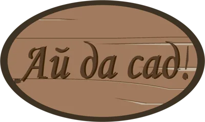
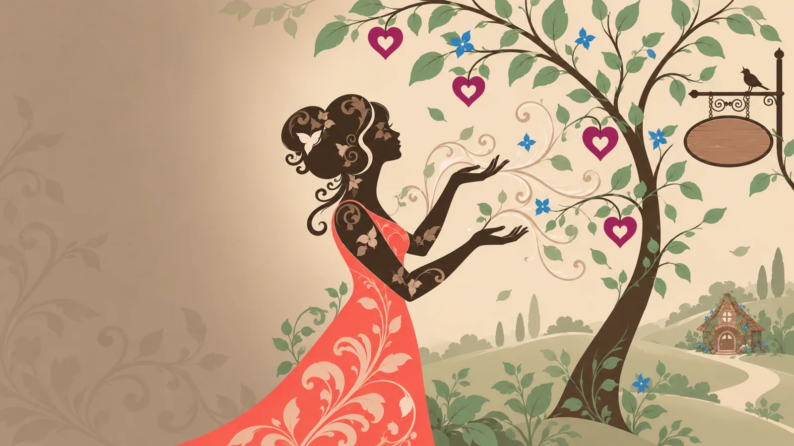
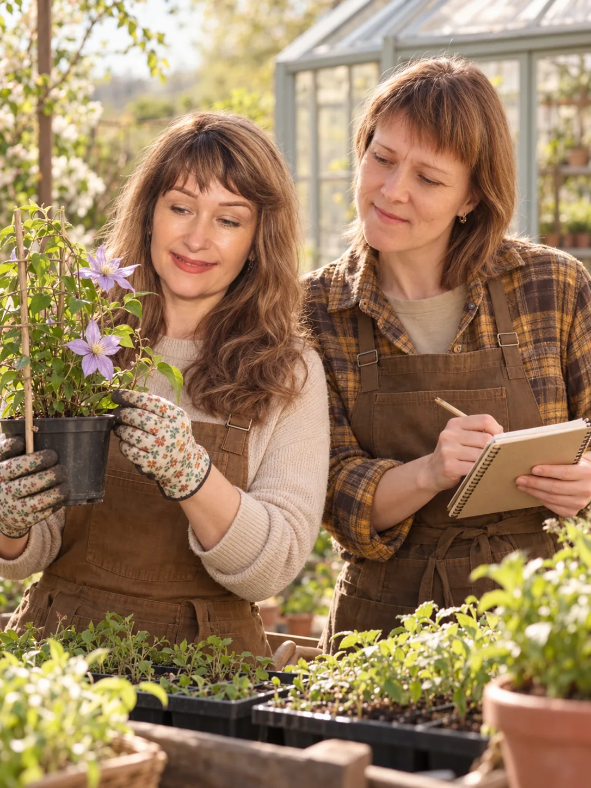

работаем с 2017 года
Создающим душой
Честные правила и забота о результате — для новичков и опытных коллекционеров
Ассортимент
Это ещё не всё — следим за новыми предложениями поставщиков и запускаем под них закупки
красивоцветущие, декоративно-лиственные, классика и новинки селекции
вечнозелёная основа ландшафта — строгие формы, фактурная хвоя и яркое цветение
большой выбор сортов для самых увлечённых коллекционеров
от проверенных востребованных сортов до экзотики и новинок
овощи, однолетники, хризантемы, гортензии и другие находки сезона
тысячи позиций от десятков производителей
Мечтаете о конкретном растении — оставьте его в «Альбоме желаний», а мы поищем, у кого его взять. Так в прошлом году родились закупки на розу «Голубой лунный камень», гортензию «Мечта Лесково» (первая в мире махровая метельчатая гортензия) и укоренённые черенки махровой примулы.
Один из самых масштабных онлайн-каталогов в регионе — тысячи позиций в сезон максимального ассортимента
Предложения крупнейших агрохолдингов России и Европы и надёжных местных питомников
Как это устроено
Цены ниже розничных, без лишних переплат
банковские переводы, оплата сервисов для работы организаторов, связь
перевозка, развоз по пунктам выдачи и упаковка заказов
все счета, статусы и способы получения в одном месте, а не в личных сообщениях
то, что мы уже взяли про запас для свободной продажи — для тех, кто хочет видеть своими глазами и не ждать поступления. Цена окончательная
8 пунктов выдачи по Калининграду, доставки по городу и его кольцу, а Яндекс-доставкой — по всей области
Пересорт и брак у проверенных поставщиков — 0–5%. С ненадёжными не работаем.
Гарантийные сроки хранения зависят от вида растений — они понятные и разумные, в эти сроки мы принимаем претензии.
Команда
Если вы ищете редкие сорта, цените комфорт и хотите быть в кругу «своих» — вы дома
основатель и организатор, отбирает поставщиков и следит за качеством
организатор, ведёт закупки и всегда на связи с участниками
по уходу, обрезке и посадке, с поправкой на климат Калининградской области
чат, отзывы и комментарии на самом видном месте, наша работа как на ладони
Есть ещё «Клуб Айдасад» — доступ открывается через поддержку сообщества. Внутри — закрытый чат, материалы под наш климат, разборы ваших садовых задач, сравнения и схемы, а по мере возможностей — индивидуальная помощь, новые цифровые инструменты и приглашённые специалисты.

Отзывы
«Уже несколько лет покупаю саженцы в Айдасад, от клубники до персиков. Все цветы растут и радуют красотой!»
«Я в группе примерно пять лет. Всё самое вкусное и красивое на нашей даче из закупок группы.»
«Очень благодарна Светлане и Юлии за стройную и вполне понятную систему организации закупок, за терпеливые разъяснения, мгновенный отклик на любые вопросы и искреннюю заботу о покупателе.»
«Все саженцы, которые я получила — розы, сирень, жимолость и ещё разное — все прижились и радуют глаз.»
«Товарами довольна, группа хорошая, информация подробная, Юлия и Светлана при необходимости всё терпеливо объяснят и пояснят, всегда на связи. Покупала семена, удобрения, саженцы — всё удачно.»
«Благодаря этой группе я оформила почти весь свой сад, и теперь он вырос из хобби в одну из составляющих моей жизни, стал её украшением и утешением. Спасибо, девочки-организаторы!»
Однажды участница посвятила Айдасад стихотворение:
О, сколько нам растений чудных
готовит группа АЙДАСАД!
Возможно, вырастить их трудно,
но как прекрасен результат.
Томаты, астры, валерьяна —
букет названий и имён.
Спасибо, милая Светлана!
Бегите, лень и скука, вон!
Альбомов интересных куча
и личный кабинет на «пять».
Ах, некогда писать получше,
бегу рассаду поливать!
Контакты
Мы — региональная группа: доставляем и выдаём заказы только по Калининграду и области
Написать в группу ВКонтакте — самый быстрый способ связаться с нами
8 точек по Калининграду, доставка по городу и кольцу
по всей области, если пункт выдачи неудобен